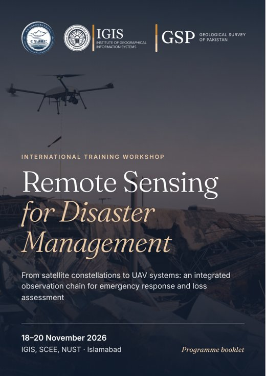
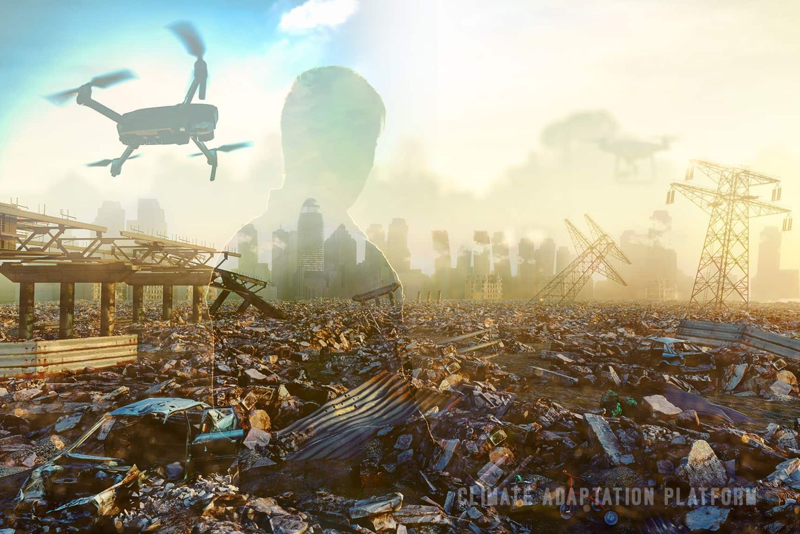
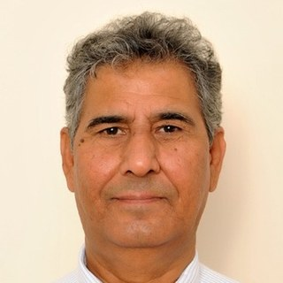

Programme booklet
The full programme, in your hands.
Turn the pages of the 12-page workshop booklet: the timetable for all three days, learning outcomes, lecturers, preparation checklist and venue. Download it as an A5 PDF to print or keep on your phone.
01 · About the workshop
Two scales. One observation chain.
When a monsoon flood moves through the Indus basin, responders need two answers at once: how far has the water spread, and who is affected? Then: which embankments breached, which bridges failed, how many homes are lost?
No single sensing platform can effectively address both. Used in a deliberate sequence, satellites and UAVs create an observation chain far more effective than either alone.
Satellite constellations give extent, repeatability and free archives, but cannot see a cracked pier. UAVs give centimetre detail, oblique views and same-day deployment, but cannot cover 100,000 km². This workshop teaches the handover between them, using openly licensed satellite data, browser-based cloud computing and standard commercial UAVs. Everything demonstrated can be reproduced with equipment and accounts ordinarily available to a Pakistani institution.

By the close of Day 3, every participant will have produced:
- Flood extent mapfrom Sentinel-1 SAR
- Exposure tablepopulation, cropland, roads
- UAV orthomosaic & DSMfrom imagery they helped fly
- Damage assessmentquantified from the model
- Situation brieffor an emergency ops centre
02 · Who should attend
For anyone whose mandate is shaped by natural hazards.
Faculty, researchers and staff working in disaster monitoring and early warning, emergency rescue, damage and loss estimation, relief and compensation, and post-disaster reconstruction, as well as students in GIS, remote sensing, environmental and civil engineering, and related fields.
- Disaster management authorities
- Agriculture & irrigation
- Revenue & land records
- Water & power
- Forestry & environment
- Health
- Food security
- Urban planning & development
- Communications & works
- Local government
- Universities & research institutes
- Students
- About 30 seats. Professionals can be nominated by their organizations (up to four per institution), and students can register themselves directly.
- Full attendance required. The Day 2 field session and Day 3 capstone build directly on earlier work.
- No coding or flying experience needed. Basic familiarity with maps, coordinates and GIS is enough.
03 · Programme
From the wide view to the close-up.
Registration opens at 8:30 AM on Day 1. Days 1 and 2 run 9:00 AM – 5:00 PM; Day 3 closes at 12:15 PM, ahead of Friday prayers. Pick a day, then open any session for its content.
-
01 Wed · 18 Nov
Foundations, wide-area assessment & mission design
- Registration and tea · badge collection, laptop check, Earth Engine login verification
Opening ceremony
Welcome address, workshop inauguration, and statement of course objectives.
Module 1 · Foundations of remote sensing across scales
Passive versus active sensing. The resolution quartet (spatial, spectral, temporal, radiometric) and why all four cannot be maximized at once. The swath-versus-resolution trade-off. What “large-scale” changes: data volume, radiometric consistency, cloud cover and processing throughput. The continuum from satellite constellations to manned aerial surveys, UAVs and ground surveys, and the reporting scale each supports. Where Earth observation enters each phase of the disaster management cycle.
Module 2 · Data access and international emergency mapping
Sentinel-1, -2 and -3; Landsat 8 and 9; MODIS and VIIRS; GPM IMERG; Copernicus and NASADEM elevation models; when commercial very-high-resolution tasking is justified. Revisit arithmetic under monsoon cloud. Analysis-Ready Data and the workload it removes. Live walkthrough of the Copernicus Data Space Ecosystem and the Google Earth Engine catalogue. The International Charter “Space and Major Disasters”, Copernicus EMS Rapid Mapping, Sentinel Asia and UN-SPIDER, with emphasis on how a Pakistani agency requests activation and realistic delivery timelines.
- Tea break
Module 3 · UAV systems, regulation and payloads
Definition, development and characteristics of UAVs. System composition: airframe, propulsion, flight controller, GNSS and IMU, datalink, ground control station and payload. Fixed-wing, multirotor and hybrid VTOL configurations, and platform selection by flight time, altitude, speed, payload capacity and integration. Imaging principles of optical, multispectral, thermal and LiDAR payloads. Regulations and responsible authorities in Pakistan; procedures for permission, notification, restricted airspace and flight logging. UAVs across the disaster cycle compared with traditional survey and satellite observation.
- Lunch and prayers
Lab 0 · Environment check
Orientation to the Earth Engine Code Editor, the shared script repository, running a first script and troubleshooting logins. An offline data package for anyone whose access has failed.
Lab 1A · Rapid flood mapping from Sentinel-1 SAR
Why SAR for floods: cloud penetration and the specular reflection of open water. Pre- and post-event Sentinel-1 GRD imagery in VV polarization; speckle filtering; change-detection ratio and histogram thresholding; terrain masking with slope and Height Above Nearest Drainage to suppress radar-shadow false positives. Output: a flood extent layer for the August–September 2022 Sindh floods.
- Tea break
Lab 1B · Exposure and impact quantification
Intersecting flood extent with WorldPop population, ESA WorldCover cropland and OpenStreetMap roads and settlements to build a district-wise exposure table. Error sources (permanent water, under-detected urban flooding, vegetated floodplain) and identifying the sub-areas where those limits justify an aerial survey.
Lab 2 · Flight planning and mission design
Formulating a survey flight plan: area, sensor, forward and side overlap, ground sample distance, efficiency, accuracy and safety. Delineating the flight area around prohibited and restricted zones; setting altitude and speed against sensor, terrain and overlap; automatic route generation and manual adjustment. Each group plans the mission it will fly on Day 2 for instructor review. Field safety and pre-flight briefing issued.
-
02 Thu · 19 Nov
Field operations & UAV data processing
Transfer and pre-flight briefing
Transfer to the NUST field site. Airspace and site status, weather and wind limits, emergency procedures, lost-link and return-to-home behaviour, crew roles and the go/no-go decision. Aircraft and battery checks, compass and IMU calibration, ground control point layout.
Field practical · UAV flight operations
Groups rotate through supervised stations: basic manual handling; emergency take-off and landing, including over uneven terrain; one-click return-to-home configuration; execution of the planned mission. Multi-source acquisition of a nadir orthophoto block, an oblique block and thermal infrared coverage of the same area, plus a ground control point survey.
Data offload and quality check
On-site verification of coverage, overlap and image quality; completing the flight log; transferring imagery to the processing workstations.
- Lunch and prayers · return to IGIS
Lab 3A · Photogrammetric processing
UAV data products and the processing chain: POS data organization; image pre-processing and quality screening; rapid stitching for first-look products; alignment, registration and correction; dense reconstruction; DSM and orthomosaic generation; georeferencing to ground control and accuracy reporting; export. A rapid field product compared with a fully processed one, and the time cost of each.
- Tea break
Lab 3B · 3D modelling and damage quantification
Oblique photogrammetry from acquisition through checking, import, adjustment, modelling and output. Change detection between epochs for rapid loss assessment; landslide displacement from differenced surface models; building damage classes and damaged road length. Reconciling these figures with the satellite exposure table from Lab 1.
If weather or airspace prevents flying, a pre-flown reference dataset is staged in advance so the processing labs run as planned.
-
03 Fri · 20 Nov · half day
Integration, case studies & rapid-response simulation
Module 4 · Integrating the observation chain
Designing a nested assessment: satellite screening to bound the event, coarse exposure estimation to prioritize, UAV tasking of priority sub-areas, and ground validation. Where the handovers sit in time, who authorizes each, and the realistic latency of each stage. UAV surveys as reference data for validating satellite classifications, and the sampling design that makes this valid. Propagating uncertainty, and reporting a figure that will be challenged in a compensation process.
Applied case studies
- Flood risk assessment of Attabad Lake using a scenario-based approach for disaster preparedness.
- Scenario-based HEC-RAS 2D unsteady flow analysis of Shisper Lake for GLOF risk assessment.
- Riverine flood assessment in Jhang district in relation to ENSO and summer monsoon rainfall over the Upper Indus Basin.
- Tea break · scenario cards and data packages distributed
Capstone · Rapid-response simulation
Six groups of five each have 45 minutes to build a four-slide rapid assessment brief: a satellite-derived event footprint, an exposure table, a UAV tasking plan with priority areas, flight time and crew estimate, and a confidence statement with recommended next tasking. Four minutes per group to present. Scenarios: monsoon flooding in Dera Ghazi Khan, a GLOF in Hunza, an earthquake near Muzaffarabad, multi-season drought in Tharparkar, urban flooding in Karachi, and post-flood reconstruction tracking in Sindh.
Communication, summary and closing
Data sharing and interoperability: Pak-NSDI, inter-agency arrangements, custody of UAV imagery and remaining gaps. Self-study packages and the follow-up online clinic. Feedback, course summary, remarks by dignitaries, certificates and group photograph.
04 · Learning outcomes
What you’ll be able to do.
- Select the right platform, sensor and spatial and temporal resolution for a hazard and reporting scale, and justify the trade-off between resolution, swath and revisit.
- Access free satellite archives and analysis-ready products (Copernicus, Landsat, MODIS, VIIRS, global DEMs) and know how a Pakistani agency requests international emergency mapping.
- Produce a rapid flood extent map from Sentinel-1 SAR by change detection, and quantify exposed population, cropland and infrastructure.
- Describe how a UAV remote sensing system works and choose a platform and payload for the mission’s endurance, altitude, speed and payload needs.
- State Pakistan’s UAV regulatory framework and responsible authorities, and follow correct procedure for permission, notification and flight safety.
- Plan and fly a UAV survey that avoids restricted airspace, sets altitude, speed and overlap, and acquires orthophoto, oblique and thermal data.
- Process UAV imagery through the full photogrammetric chain to an orthomosaic, a DSM and an oblique 3D model.
- Quantify disaster damage from UAV products with change detection and displacement analysis, reconciled with satellite exposure estimates.
- Design a nested, multi-scale workflow where satellite screening directs UAV tasking, with the validation and uncertainty of each stage.
- Assemble a rapid post-event situation brief under time pressure, with an explicit statement of uncertainty and recommended next tasking.
05 · Expert Lecturers
International and national expertise in remote sensing and disaster risk.
Delivered jointly by two experts nominated by CPJRC from the Institute of Mountain Hazards and Environment, Chinese Academy of Sciences, and two faculty members of SCEE – IGIS, NUST.
-
Dr. NIE Yong
Professor · Institute of Mountain Hazards and Environment (IMHE), CAS
Director of the Mountain Science Data Center at IMHE and recipient of the CAS Regional Development Young Scholar Award. Works on glacier and glacial lake hazards and new remote sensing methods; led the Glacier and Glacial Lake Monitoring Network and contributed to disaster risk assessment for the China–Pakistan Economic Corridor. More than 50 papers, including ESI highly cited work; review expert for NSFC, MOST, ERC and NERC.
-
Engr. WANG Wen
Assistant Engineer · Mountain Science Data Center, IMHE, CAS
Specializes in multi-source remote sensing for mountain hazards and the cryosphere, including glacial lake inventories and freeze–thaw disaster monitoring. Extensive UAV field experience, from flight planning and image quality control to orthomosaics, DEMs, point clouds and 3D models. Has contributed to national and provincial projects, papers and patents on glacial lake extraction, and teaches with case studies from High Asia.
-

Dr. Javed Iqbal
Professor · SCEE – IGIS, NUST
Over three decades of teaching, research and leadership; PhD from Mississippi State University and MS from the University of Arkansas. Works on soil science, GIS and remote sensing, and hazard mapping of landslides, glacier avalanches and flash floods. More than 200 scholarly contributions (h-index 29); supervised over 100 MS and 4 PhD students; funding from DAAD, NSF and Erasmus.
-
Dr. Shahid Nawaz Khan
Assistant Professor · SCEE – IGIS, NUST
PhD in Remote Sensing (University of Alabama) and MS in GIScience (South Dakota State University); President’s and Rector’s Gold Medals at NUST. Researches explainable, spatially explicit machine learning for Earth observation, SAR–optical fusion, large-scale Earth Engine workflows and UAV remote sensing. FAA Part 107-certified remote pilot with 200+ flight hours.
06 · Before you arrive
Come ready to work.
The schedule is compressed, so there is no slack to recover from a failed login on the day. Please complete these beforehand.
Day 1 labs run on any ordinary laptop. Day 2 photogrammetry runs on IGIS workstations, and you take home a subsampled dataset to repeat the workflow later.
- Google Earth Engine access registered and verified with a linked Google Cloud project. Approval can take 7–10 days, so start now.
- A laptop with Google Chrome. The Earth Engine Code Editor is unreliable in some other browsers.
- QGIS 3.34 LTR installed as the offline fallback, with at least 5 GB of free disk space.
- A UAV ground-station app on your phone or tablet for mission planning, charged, with a cable.
- Field clothing for Day 2 morning: closed-toe shoes, sun protection and a hat. The site is open ground with little shade.
- The pre-reading pack, circulated two weeks ahead: sensor terminology, correction concepts and the disaster management cycle.
- Signed field-safety acknowledgement, handed in at registration.
07 · Registration
Reserve your seat.
PKR 10,000registration fee per participant
- Choose your route. Professionals can be nominated by their organization (up to four per institution); students can register themselves.
- Fill in the form. Submit the online registration form with your details and affiliation.
- Pay the fee. Transfer PKR 10,000 to the account shown here, with
Remote Sensing Workshop 2026
and your name in the remarks. - Get confirmation. We confirm your seat by email once payment is verified.
Bank details for the registration fee
- Account title
- IGIS Non-Development Fund Account
- Bank / branch
- HBL, H-12 NUST Branch, Islamabad
- Branch code
- 2292
- Account number
- 22927000142903
- IBAN
- PK85HABB0022927000142903
08 · Venue & contact
See you at NUST.
Lectures & labs · all three days
Institute of Geographical Information Systems
School of Civil and Environmental EngineeringNUST Sector H-12, Islamabad 44000 Get directions
UAV flight operations · Day 2 morning
NUST Field Site
Near the Saddle Club, NUST H-12 campusTransfer from IGIS at 8:30 AM